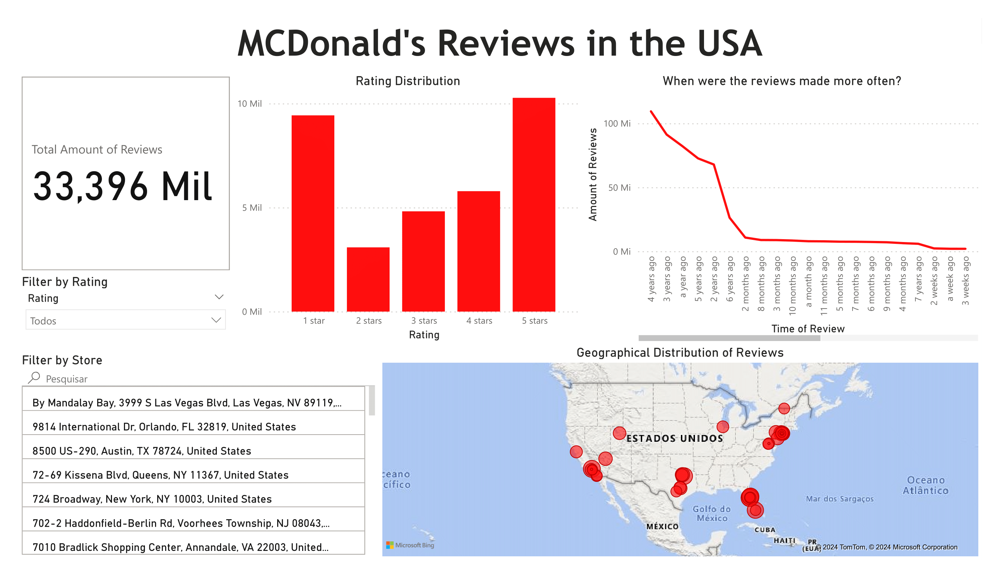

Code
#Imports and Variables
import pandas as pd The objective is to conduct the analysis of data comprising numerous reviews for McDonald’s stores across the United States. The primary aim is to define the overall structure of the received data and to identify potential patterns within it.
While the dataset contains textual data suitable for Natural Language Processing (NLP) analysis, it’s essential to clarify that our current focus is not on NLP techniques. Instead, our primary goal is to extract insights that can inform strategic decisions by uncovering recurring themes, sentiments, and trends within the reviews.
This main objective of this exploration is to provide valuable insights into customer experiences and perceptions of McDonald’s stores nationwide, contributing to a better understanding of the brand’s strengths and areas for improvement.
This dataset was took from Kaggle, credits due to Nidula Elgiriyewithana, the author of that dataset.
According to the Kaggle page itself, there are over 33000 anonymized reviews of McDonald’s stores in the United States, scraped from Google reviews.
The features are as it follows:
#Imports and Variables
import pandas as pd df = pd.read_csv('../data/McDonald_s_Reviews.csv', encoding='latin1')
df.head()| reviewer_id | store_name | category | store_address | latitude | longitude | rating_count | review_time | review | rating | |
|---|---|---|---|---|---|---|---|---|---|---|
| 0 | 1 | McDonald's | Fast food restaurant | 13749 US-183 Hwy, Austin, TX 78750, United States | 30.460718 | -97.792874 | 1,240 | 3 months ago | Why does it look like someone spit on my food?... | 1 star |
| 1 | 2 | McDonald's | Fast food restaurant | 13749 US-183 Hwy, Austin, TX 78750, United States | 30.460718 | -97.792874 | 1,240 | 5 days ago | It'd McDonalds. It is what it is as far as the... | 4 stars |
| 2 | 3 | McDonald's | Fast food restaurant | 13749 US-183 Hwy, Austin, TX 78750, United States | 30.460718 | -97.792874 | 1,240 | 5 days ago | Made a mobile order got to the speaker and che... | 1 star |
| 3 | 4 | McDonald's | Fast food restaurant | 13749 US-183 Hwy, Austin, TX 78750, United States | 30.460718 | -97.792874 | 1,240 | a month ago | My mc. Crispy chicken sandwich was ���ï¿... | 5 stars |
| 4 | 5 | McDonald's | Fast food restaurant | 13749 US-183 Hwy, Austin, TX 78750, United States | 30.460718 | -97.792874 | 1,240 | 2 months ago | I repeat my order 3 times in the drive thru, a... | 1 star |
df.describe()| reviewer_id | latitude | longitude | |
|---|---|---|---|
| count | 33396.000000 | 32736.000000 | 32736.000000 |
| mean | 16698.500000 | 34.442546 | -90.647033 |
| std | 9640.739131 | 5.344116 | 16.594844 |
| min | 1.000000 | 25.790295 | -121.995421 |
| 25% | 8349.750000 | 28.655350 | -97.792874 |
| 50% | 16698.500000 | 33.931261 | -81.471414 |
| 75% | 25047.250000 | 40.727401 | -75.399919 |
| max | 33396.000000 | 44.981410 | -73.459820 |
df.nunique()reviewer_id 33396
store_name 2
category 1
store_address 40
latitude 39
longitude 39
rating_count 51
review_time 39
review 22285
rating 5
dtype: int64df['store_name'].unique()array(["McDonald's", "ýýýMcDonald's"], dtype=object)df.isna().sum()reviewer_id 0
store_name 0
category 0
store_address 0
latitude 660
longitude 660
rating_count 0
review_time 0
review 0
rating 0
dtype: int64